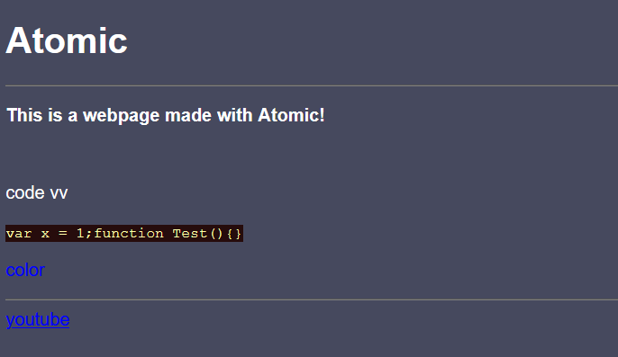

Atomic
Make webpages using JS
Bg("#46495e");
drawHeader(1,"color:white;font-family:Arial;font-weight: bold;","Atomic");
insertHeadLine();
drawText("color:white;font-weight:bold;font-family:Arial;","This is a webpage made with Atomic!");
insertBreak();
drawText("color:white;font-family:Arial;","code vv");
insertCodeSnip("var x = 1;function Test(){}");
drawText("color:blue;font-family:Arial;","color");
insertHeadLine();
drawLink("https://youtube.com","color:blue;font-family:Arial;","youtube");
